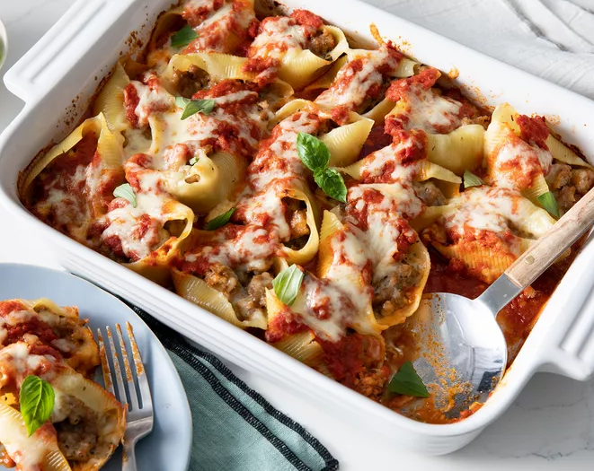

Lasagna

My grandmother's hamburger casserole is classic comfort food! Featuring ground beef, noodles, and a creamy cheese sauce, this simple recipe dates back to the 1940's. You can tweak the amount of cheese and sour cream depending on what you've got in the fridge — it'll still turn out great!
ground beef
tomato sauce
sugar
garlic
salt
pasta
sour cream
cheese
onion
Steps
cook beef
mix tomato sauce, garlic, sugar, salt with beef
boil water and cook pasta. drain.
mix sour cream, cheese and onion
layer the pasta with the beef and sour cream mixture, sprinkle cheese on top
bake in oven until cheese melts, enjoy.